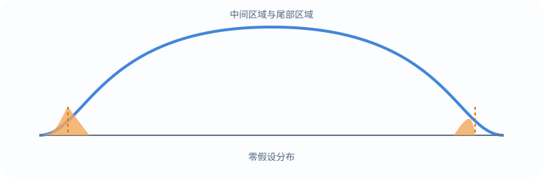

第10章：假设检验入门
大家好，我是你们的讲师。假设检验可能是统计学中最重要、也最容易被误解的概念。它在科学发现、医学研究、产品优化中无处不在——几乎每一个"这个药有效吗"、"这个新功能更好吗"的问题，背后都是假设检验在提供答案。
本章学习目标
- 零假设
- 备择假设
- p值

交互实验：统计量越极端，p 值如何变化
用双侧标准正态检验示意统计量与 p 值的关系；真实检验还需匹配统计量分布。
交互控件加载后，可调整参数并观察统计量的变化。
但我想先讲一个故事。20世纪20年代，英国剑桥一个午后，一群学者在喝下午茶。一位女士声称：她能分辨出茶是先加奶还是先加茶。在场的大多数人不以为然——这怎么可能？但一位略显消瘦的绅士不这么想。他说："我们来做个实验证明一下吧。"
这位绅士就是罗纳德·费歇尔（Ronald Fisher），统计学的泰斗级人物。而这场"品茶实验"后来被称为"Lady Tasting Tea"，被认为是现代假设检验的思想起源。
10.1 费歇尔的奶茶实验
费歇尔是怎么设计的呢？他准备了8杯茶，其中4杯是先加奶后加茶，另外4杯是先加茶后加奶。然后让这位女士品尝并判断每一杯的冲泡顺序。关键问题是：如果这位女士只是瞎猜，她答对的概率是多少？
费歇尔用了一个很聪明的办法——他算出了"纯靠运气猜对所有结果"的概率。假设她完全在猜，那么从8杯中选出4杯"先奶后茶"的杯子的组合方式有 C(8,4) = 70 种。全部猜对的概率只有 1/70 ≈ 0.014。这个概率很小，所以如果她真的全部猜对了，我们就有理由相信她不是靠运气——而是真的有这个能力。
这个思考框架后来演变成了我们今天所说的零假设显著性检验（Null Hypothesis Significance Testing, NHST）。
10.2 零假设（H₀）与备择假设（H₁）
每一个假设检验都包含两个对立的假设：
- 零假设（H₀, null hypothesis）：通常是"没有效果"、"没有差异"、"没有关系"。它是我们试图推翻的假设。
- 备择假设（H₁, alternative hypothesis）：通常是"有效果"、"有差异"、"有关系"。它是我们试图证明的假设。
为什么叫"零假设"？因为费歇尔认为科学中的默认立场应该是"什么都不发生"，如果有证据表明发生了什么事，那才能推翻这种默认立场。这个逻辑很像法律上的"无罪推定"——被告在未被证明有罪之前都是清白的。零假设就是"无辜"的假设，而我们手上的数据就是"证据"。
10.3 p值的含义（它不是概率！）
p值（p-value）恐怕是统计学中被误解最深的概念。它的正式定义是：在零假设为真的前提下，观察到当前数据（或更极端数据）的概率。
请注意：p值不是"零假设为真的概率"，也不是"我们犯错的概率"。它只是一个条件概率——假设H₀是真的，那我们的数据"有多离谱"。p值越小，说明数据在H₀为真的框架下越"不可能"出现，于是我们就倾向于拒绝H₀。
回到奶茶实验：她全猜对的概率是 1/70 ≈ 0.014。这个0.014就是p值。p值很小，所以我们可以说："如果她是瞎猜的，那么我们看到全猜对这种情况的概率只有1.4%。这个概率太小了，我选择不相信她是瞎猜的。"
10.4 α = 0.05 的由来与争议
为什么大家都用 α = 0.05？为什么不是 0.01 或 0.10？这个传统很大程度上要归功于费歇尔本人。他在1925年的著作《研究工作者的统计方法》中写道："一个在20次中发生不超过1次的事件，可以被认为达到了统计显著水平。"他选择了5%作为经验法则，随着时间推移，这个数字被固化成了"标准"。
但实际上，α的选择应该是问题相关的。如果你的决策会影响到成千上万人的健康（比如一种新药的上市审批），你可能应该用 α = 0.01 甚至更严格。如果只是早期探索性的数据分析，α = 0.10 也可以接受。
近年来，统计学界对"p < 0.05 = 显著"这种机械化做法提出了强烈批评。2018年，美国统计协会发布了关于p值的声明，警告不要滥用p值。但这并不意味着p值没用——关键在于正确理解和使用。
下面来看一个用 Python 做 t 检验的完整例子：
import numpy as np
from scipy import stats
# 设定随机种子
np.random.seed(42)
# 模拟两组数据：对照组的成绩
control = np.random.normal(loc=70, scale=10, size=50)
# 实验组的成绩（有一个微小的提升）
treatment = np.random.normal(loc=73, scale=10, size=50)
# 独立样本 t 检验
t_stat, p_value = stats.ttest_ind(control, treatment)
print(f"对照组均值: {np.mean(control):.2f}")
print(f"实验组均值: {np.mean(treatment):.2f}")
print(f"两组均值差: {np.mean(treatment) - np.mean(control):.2f}")
print(f"t 统计量: {t_stat:.4f}")
print(f"p 值: {p_value:.4f}")
alpha = 0.05
if p_value < alpha:
print(f"p = {p_value:.4f} < 0.05，拒绝零假设，两组存在显著差异")
else:
print(f"p = {p_value:.4f} >= 0.05，无法拒绝零假设")
# 置信区间也能帮助我们判断
ci = (np.mean(treatment) - np.mean(control)) + \
stats.t.ppf(0.975, df=98) * np.sqrt(np.var(control, ddof=1)/50 + np.var(treatment, ddof=1)/50) * np.array([-1, 1])
print(f"均值差的95%置信区间: [{ci[0]:.2f}, {ci[1]:.2f}]")10.5 假设检验的步骤总结
每次做假设检验时，可以按以下五个步骤来：
- 设定假设：明确 H₀ 和 H₁。
- 选择显著性水平 α：通常选 0.05。
- 选择检验方法并计算检验统计量：根据数据类型和假设选择合适的检验（t检验、z检验等）。
- 计算 p 值：或者与临界值比较。
- 做出决策：如果 p < α，拒绝 H₀；否则无法拒绝 H₀。
学习假设检验最关键的领悟是：它不是一个自动化的决策机器，而是一种量化不确定性的思维方式。p值不应该成为你唯一关注的对象——效应量、置信区间、统计功效同样重要。
下一章，我们将讨论各种常见的假设检验方法——z检验、t检验、卡方检验、F检验，以及如何在不同场景中选择正确的检验方法。
本章小结
报告检验结果时，同时给出效应量、区间和研究设计背景。